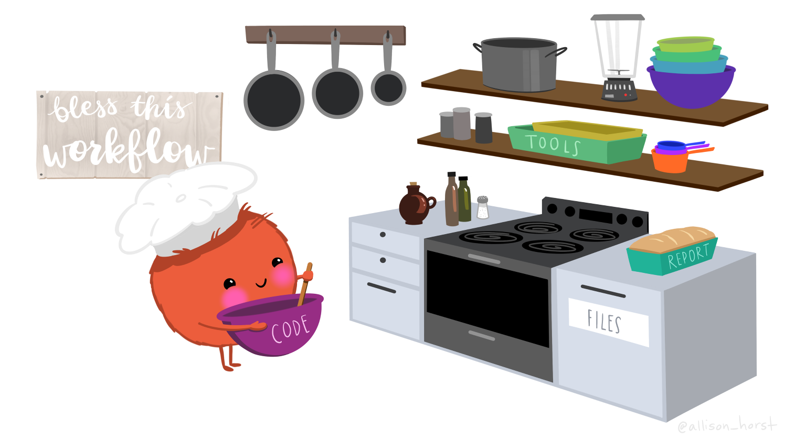
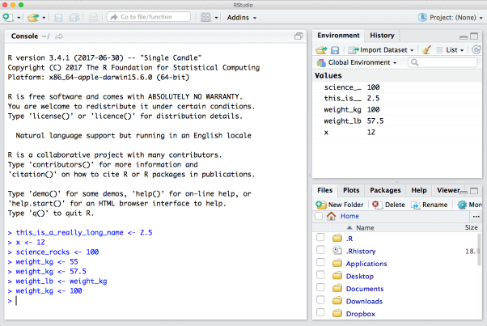
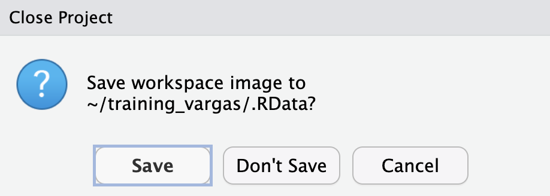
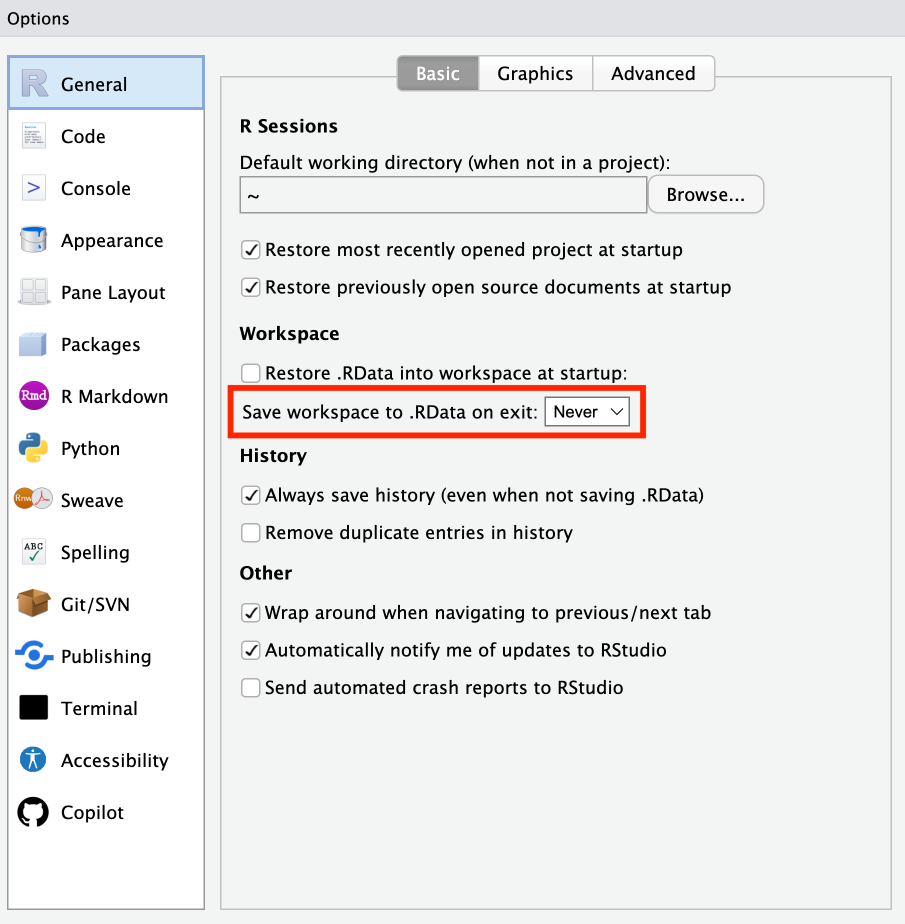

### think of this code as someone saying "fave_num gets 42".
fave_num <- 42
### and then square it
fave_squared <- fave_num^2
fave_squared[1] 1764This lesson is a combination of excellent lessons by others. Huge thanks to Julie Lowndes for writing most of this content and letting us build on her material, which in turn was built on Jenny Bryan’s materials. We highly recommend reading through the original lessons and using them as reference (see in the resources section below).

Incorporating programming into analysis workflows makes science more efficient and more computationally reproducible. We will use the programming language R, and the accompanying integrated development environment (IDE) RStudio. R is a great language to learn for data-oriented programming because it is widely adopted, user-friendly, and (most importantly) open source.
Imagine you are a chef, and you have to prepare a meal. You’ll need a place to work (a kitchen), you’ll need some tools (pots, pans, a knife, etc.), and you’ll need some ingredients. In this analogy, R is a good chef’s knife - one of the most important tools that you’ll use to accomplish your task.
And if R is your chef’s knife, RStudio is your kitchen. RStudio provides a place to do your work! RStudio makes working with R easier by bringing together other tools for working efficiently - like a file browser, data viewer, help pages, terminal, support, etc. You could learn R without RStudio,
(and in this analogy, your ingredients are data!)
Just as you can prepare food without a kitchen, we could learn R without RStudio. RStudio makes it much easier to work with R, just as a well-stocked kitchen makes cooking more fun. We are going to take advantage of the great RStudio support, and learn R and RStudio in conjunction.
Learning R is like learning any new language. It’s an ongoing process, it takes time, you’ll make mistakes, it can be frustrating, but it will be overwhelmingly useful in the long run. We all speak at least one language - no matter how fluent you are, you’ll always be learning, you’ll be trying things in new contexts, learning new words and new phrases.
You’ll learn to understand context for programming language just like you learn the context for spoken language. Think about how every language often has a word for the first meal of the day – breakfast in English, desayuno in Spanish. Programming languages also have words (functions) that express specific ideas. There is a way to sort values, search for text patterns, calculate medians, or reshape data. The goal is to expand your expectations so that each goal that you have, there’s likely a function that helps you get there.
Let’s take a tour of the RStudio interface.
Let’s say the value of 12 that we got from running 3 * 4 is a really important value we need to keep. To store information in R, we need to create an object.
We can assign a value or expression to an object using the assignment operator, <- (greater than sign and minus sign). All objects in R are created using the assignment operator, following this form: object_name <- value.
Create an object!
Assign your favorite number to an object called fave_num. Then, create an object called fave_squared and assign the square of fave_num (use the superscript, like 5^2), and inspect the object.
[1] 1764Notice how after creating the fave_num object, R doesn’t print anything. However, we know our code worked because we see the object, and the value we wanted to store is now visible in our Global Environment. We can force R to print the value of the object by calling the object name (aka typing it out) or by using parentheses.
When you begin typing, RStudio will suggest autocompletions that you can select by hitting tab, then return.
In the Console, use the up and down arrow keys to call your command history, which shows the most recent commands first.
When naming objects, variables, observations, or data frames, make them:
Pick names that are specific to the data, experiment, or project. Their interpretation should be intuitive - they shouldn’t be so generic or vague that the user needs a glossary to know what they contain.
Bad Examples: File-1.xlsx, indicator1, indicator2, ExperimentA.R, ExperimentB.R
Better Examples: taco_nutrients.csv, nc_demographics, mice_1a_mass, rachel_carson_spatial.shp
Keep names perfectly identical for identical value entries (e.g. “burrito-32” and “Burrito 32” are completely different things to R)
Be consistent across data frames. Your life will be easier if you have year called “year” in both sets, instead of “Year” and “YEAR” and “Year_New”.
Use logical suffixes (if necessary), consistently formatted. Like: temp_water_surface, temp_water_sub, temp_water_bottom
Balance meaningfulness with conciseness
Better to be descriptive than not know what a variable is (especially with tab completion)
Longer names = tedious coding, but less effort to look through metadata for column/identifier names (or risk of mis-remembering…)
Bad examples: ‘first dive temp readings Celsius’, greatblueheron_observations_2019_09_20, “Cori final figures version 3.xlsx”
Better examples: beaufort_sst, UsTotalPop, PercCover
Avoid punctuation (%, !, ~, (, ), #) in names - more challenging to type and can mean things in code that you don’t want it to (or break it)
Avoid spaces (makes coding much more difficult)
Avoid starting object names with numbers (but could be useful for file names in sequence)
Pick and be consistent with a choice of case
A clear, consistent naming convention improves readability and reduces cognitive load. Choosing one is a personal preference.
For the object fave_num, we used an underscore to separate the object name. This naming convention is called lowercase snake case - it is common in data science because it’s easy to scan, works well across operating systems, and avoids ambiguity.
snake_case |
easy to scan, works well across OS |
camelCase |
compact but less readable |
UpperCamelCase (also called PascalCase) |
often used to signal a different type of object (e.g. functions) |
kebab-case |
not good for objects because R treats a hyphen as a minus sign (but works nicely for file names) |
SCREAMING_SNAKE_CASE |
case is a personal preference so you can absolutely pick what you want as long as you are consistent… |
We’ve been typing code in the Console, let’s try running code in an R Script. A script is a plain text file that RStudio uses by sending the selected lines to the Console, just as if you had typed them yourself.
Create a vector!
Create a vector with the values 18.1, 8.9, 11.3, 11.2, and 15.7, representing tree heights in meters, and assign it an appropriate name. Convert these heights to feet (1 meter = 3.28 feet) and store the result in a second object.
As a bonus, calculate the average tree height. Hint: look at the mean function! Typing ?mean in the console will show you the help page for this function.e
We’ve been using numeric data types, but R also works with text. Creating a character object requires quotes:
These examples show how R treats different data types. Only the numeric expression produces a calculation. Character strings can’t be multiplied because their operations differ from those defined for numbers.
Every object in R has a class, and valid operations depend on that class. Numbers support arithmetic; strings support text manipulation, which you can extend with packages such as stringr and tidytext packages.
Working with data frames is an important skill for data science in R. There are some built-in datasets in R, including sample data frames that we can work with. Let’s access the built-in mtcars data frame, a set of attributes of various cars from Motor Trends 1974.
mpg cyl disp hp drat wt qsec vs am gear carb
Mazda RX4 21.0 6 160 110 3.90 2.620 16.46 0 1 4 4
Mazda RX4 Wag 21.0 6 160 110 3.90 2.875 17.02 0 1 4 4
Datsun 710 22.8 4 108 93 3.85 2.320 18.61 1 1 4 1
Hornet 4 Drive 21.4 6 258 110 3.08 3.215 19.44 1 0 3 1
Hornet Sportabout 18.7 8 360 175 3.15 3.440 17.02 0 0 3 2
Valiant 18.1 6 225 105 2.76 3.460 20.22 1 0 3 1Figure out at least 3 ways to access the horsepower hp of a Datsun 710.
Here are a few ways that would work:
[1] 93[1] 93[1] 93[1] 93[1] 93[1] 93[1] 93We’ll learn more ways later, with the powerful and popular tidyverse package. Note that choosing by row number and column number is a little risky - what if someone reorders the rows or columns and doesn’t tell you? So choosing by name where possible, or filtering using logical tests, is generally preferable!
In R, an object is a noun while a function is a verb - functions do all our data science work for us.
Create a vector to store the noon temperature (in Celsius) in Beaufort for three consecutive summer days:
Earlier, we created a vector of tree heights in meters (tree_h_m). Use mean() again and store it in a new object called mean_h_m.
After ten years, each tree has grown 3 meters. Update the vector:
Now, call mean_height_m in the console or take a look at your Global Environment. Is that the value you expected? Why or why not?
Calling mean_h_m now shows the original value. Object assignment in R is independent: updating tree_h_m does not update mean_h_m unless you recalculate it.
This provides an important concept: R scripts run from top to bottom. When editing a script, values depend on the order in which the lines are executed. Clearing the environment and running the script from start to finish is the best way to ensure the results reflect the full sequence of code.
read.csv() function to read a file into RWe’ve assigned values to objects and used functions, but now we’ll bring in real data. read.csv() is a function that does exactly what it promises: it reads a CSV file into R.
Since this is our first time using it, start with the Help page (?read.csv). It’s long because the function has many optional arguments, but the key one is the first: you need to tell R which file to read. Let’s get a file!
BGchem2008data.csv by clicking the “download” button next to the file (cloud + arrow). Save it in a folder called data in the project.data by checking the Files pane.Now tell read.csv() where to find the file. The Help page shows the file argument, which takes a path. In R, you can either use absolute paths (which will start with your home directory ~/) or paths relative to your current working directory. RStudio has some great auto-complete capabilities when using relative paths, so we will go that route.
If your working directory is your project (training_{NAME}) and the CSV is in data, your import looks like this:
This creates a data frame called bg_chem_dat. Check that it loaded by looking in the environment pane.
The Help page for read.csv() lists many arguments we didn’t use. Some are optional; some are required. Optional arguments appear as name = value, where the value shown is the default. If you don’t specify that argument, the function uses the default. For read.csv(), header = TRUE is a typical example.
Required arguments appear without a value. For read.csv(), the only required argument is file.
R can match arguments by name or by position. In our earlier call, we didn’t specify file = because file is the first argument, and R assigns the first value to it automatically. The equivalent explicit call would be:
To adjust another argument, we need to name it, because the second argument in read.csv() is header. For example, many people set stringsAsFactors like this:
With familiar functions, it’s common to omit names for the first one or two arguments. For less familiar functions, naming every argument makes your code more readable for collaborators and your future self.
A data.frame stores tabular data: columns represent variables, and rows represent observations. When you used read.csv(), the result was a data.frame saved as bg_chem_dat. Explore it a few ways:
bg_chem_dat in the environment panebg_chem_dat in the environment panehead(bg_chem_dat) in the ConsoleView(bg_chem_dat) in the ConsoleNow examine specific columns and try a few simple calculations:
Base R’s read.csv() is common, but many workflows use other import functions that also produce data frames:
readr::read_csv() from the handles csv files quickly and parses types (including dates) more reliably. (try: bg_chem_dat <- readr::read_csv("data/BGchem2008data.csv"))readxl::read_excel() reads Excel files.googlesheets4::read_sheet() reads directly from Google Sheets.We can ask questions about an object using logical operators and expressions. Let’s ask some “questions” about the tree_h_m object we made.
== means ‘is equal to’!= means ‘is not equal to’< means ‘is less than’> means ‘is greater than’<= means ‘is less than or equal to’>= means ‘is greater than or equal to’R will apply the logical test to each element of a vector and tell you the result as TRUE or FALSE.
Take a look at the objects in your Environment (Workspace) in the upper right pane. The Workspace is where user-defined objects accumulate. There are a few useful commands for getting information about your Environment, which make it easier for you to reference your objects when your Environment gets filled with many, many objects.

You can get a listing of these objects with a couple of different R functions:
[1] "fave_num" "fave_squared" "m_to_ft" "mean_height_m"
[5] "mean_temp_c" "mtcars" "science_rocks" "temp_c"
[9] "tree_h_ft" "tree_h_m" "x" "y"
[13] "z" [1] "fave_num" "fave_squared" "m_to_ft" "mean_height_m"
[5] "mean_temp_c" "mtcars" "science_rocks" "temp_c"
[9] "tree_h_ft" "tree_h_m" "x" "y"
[13] "z" If you want to remove the object named tree_h_m, you can do this:
To remove everything (or click the Broom icon in the Environment pane):
It’s good practice to clear your environment. Over time your Global Environmental will fill up with many objects, and this can result in unexpected errors or objects being overridden with unexpected values. Also it’s difficult to read / reference your environment when it’s cluttered!

DON’T SAVE
When ever you close or switch projects you will be promped with the question: Do you want to save your workspace image to /“current-project”/ .RData?
RStudio by default wants to save the state of your environment (the objects you have in your environment pane) into the RData file so that when you open the project again you have the same environment. However, as we discussed above, it is good practice to constantly clear and clean your environment. It is generally NOT a good practice to rely on the state of your environment for your script to run and work. If you are coding reproducibly, your code should be able to reproduce the state of your environment (all the necessary objects) every time you run it. It is much better to rely on your code recreating the environment than saving the workspace status.
To make sure you’re always working reproducibly, change the Global Options configuration for the default to be NEVER SAVE MY WORKSPACE. Go to Tools > Global Options. Under the General menu, select Never next to “Save workspace to .RData on exit” (and uncheck “Restore .RData into workspace at startup”). This way you won’t get asked every time you close a project, instead RStudio knows not to save.
 :::::::::::::::::::::::::::